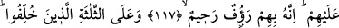

TEBÜK GAZVESİ’NDEN
GERİ KALANLARIN
BAĞIŞLANMASI
117. Andolsun Allah, Peygamber’i ve o güçlük saatinde O’na uyan Muhacirler’i
ve Ensâr’ı affetti. İçlerinden bir kısmının kalpleri kaymağa yüz tutmuş iken yine de
onların tevbesini kabul buyurdu. Çünkü O, onlara karşı çok şefkatli, çok
merhametlidir.
118. Ve geri bırakılan o üç kişinin de tevbesini kabul buyurdu. Bütün genişliğine
rağmen yeryüzü başlarına dar gelmiş, canları sıkıldıkça sıkılmış ve Allah’tan, yine
kendisine sığınmaktan başka çare olmadığını anlamışlardı. Sonra Allah onları
tevbeye muvaffak kıldı ki tevbe etsinler. Çünkü Allah, tevbeyi çok kabul eden, çok
esirgeyendir.
“Andolsun Allah, Peygamberi … affetti.”
İbn Abbas (r.a.) demiştir ki: Allah, Hz. Peygamber’i, münâfıklara (Tebük savaşında)
savaşa katılmama konusunda izin vermesinden dolayı affetmiştir. Bu izin yalnızca
Peygamber (a.s.)’dan sâdır olmuşsa da bütün (müminlere) isnad edilmiştir. Çünkü bir
kişinin yaptığı iş, bir topluluk içerisinde işlendiği zaman onların tamamına isnad edilir.
Nitekim “Falan oğulları Zeyd’i öldürdüler.” denilir.
Peygamberimiz Efendimiz’in bu günahı, zelle kabilindendir. Çünkü bize göre
peygamberler büyük ve küçük günahlardan mâsumdurlar. Zira günah işlemek,
müminlerin gönüllerinden günah işleyen kimsenin haşmetini ve ona gösterilen tâzimi
giderir. Peygamberlerin heybetli ve saygın kişiler olmaları gerekir. Bu yüzdendir ki
onlar, cüzzam gibi insanları tiksindirici hastalıklardan da korunmuşlardır.
Peygamberlerin zelleleri, onların haktan bâtıla kaymaları mânâsında değildir. Fakat
bu, onların efdal olandan fazîletli olana kaymaları demektir. Peygamberler, Allah
katındaki kadir ve kıymetlerinin büyüklüğünden dolayı bu tür hareketle dahi kınanırlar.